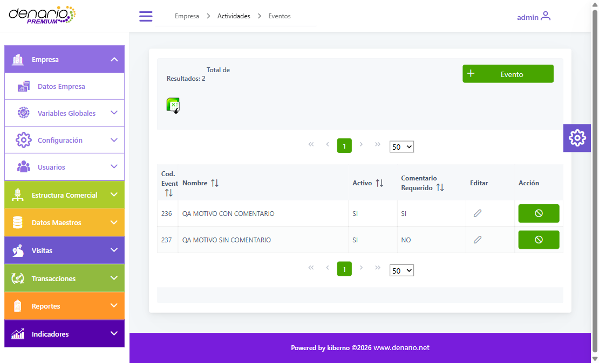
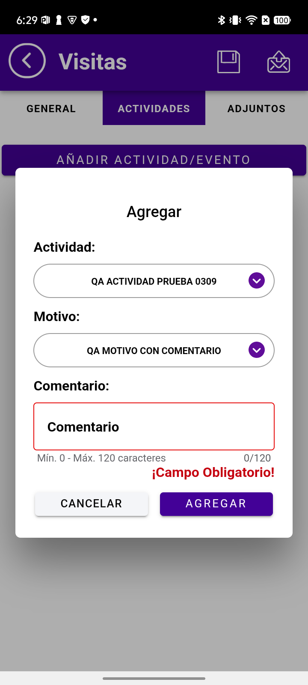
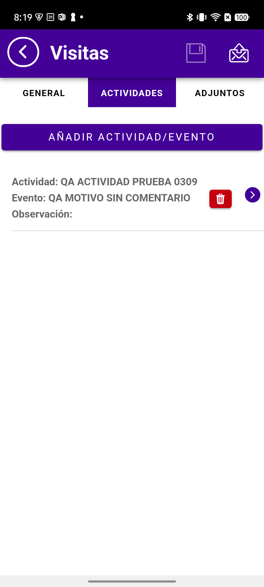
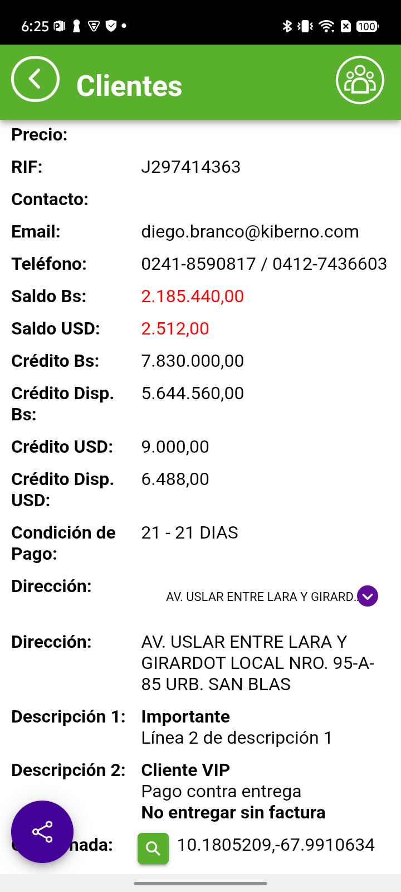

CONTROL DE CALIDADVuelta parcial · documento de trabajo
03–04/09/2026
03–04/09/2026
IMPORTADORA 4K · GRUPO 4K (DIESE) · Isla Coche
guiones-regresion/guion-req-4k-seis.md.
| Qué se validó | REQ 1 (comentario obligatorio por motivo), 2 (desactivar actividades) y 5 (HTML en descripciones) |
| Usuario móvil | v.0002zonacentral — ANGEL BETANCOURT (id_user 300) |
| Cliente de prueba | C.0010 EURO REPUESTOS FIOVAL, C.A. (id_client 11) |
| Capas verificadas | Web · Base de datos · Móvil |
| Resultado | 3 PASS · 0 FAIL · 3 en espera |
| # | Requerimiento | ¿Construido? | Resultado | Qué falta |
|---|---|---|---|---|
| 1 | Comentario obligatorio por motivo | Sí | ✅ PASS | — |
| 2 | Desactivar actividades | Sí | ✅ PASS | — |
| 3 | Zoom de imágenes | Sí | ⏸ EN ESPERA | No hay productos con imagen cargada |
| 4 | Moneda por defecto (es un defecto) | — | ⏸ EN ESPERA | Falta el cliente/config donde reproduce |
| 5 | HTML en descripciones | Sí | ✅ PASS | — |
| 6 | Estatus en Depósitos | Parcial | ⏸ EN ESPERA | Desarrollo ajustó la BD; hay que medir de cero |
activate. La columna
real es active, y sí estaba implementada en las dos capas. El error fue de
la revisión, no del desarrollo.
La web permite marcar, motivo por motivo, si el comentario es obligatorio; y el móvil lo exige al seleccionarlo. Se probó con dos motivos, uno de cada tipo.
| Cód. | Motivo | Comentario Requerido (web) | required_comment (BD) |
|---|---|---|---|
| 236 | QA MOTIVO CON COMENTARIO | SI | true ✅ |
| 237 | QA MOTIVO SIN COMENTARIO | NO | false ✅ |

| Motivo | Comentario | Al pulsar AGREGAR | |
|---|---|---|---|
| QA MOTIVO CON COMENTARIO | vacío | No agrega · borde rojo y «¡Campo Obligatorio!» | ✅ |
| QA MOTIVO SIN COMENTARIO | vacío | Agrega normalmente | ✅ |

Lo que pedía el cliente: que una actividad deje de ofrecerse en el móvil, pero siga viéndose en las visitas que ya la usaban. Se cumplen las dos.
| Condición | Medición | |
|---|---|---|
| El alta llega al móvil | la lista pasó de 12 a 13 actividades | ✅ |
| Al desactivar, caen sus motivos | la web avisa «También se desactivarán sus motivos» y así ocurre; required_comment se conserva | ✅ |
| Ya no se ofrece en visitas nuevas | de 13 a 12 — exactamente la lista previa a crearla | ✅ |
| Sigue visible en la visita guardada | «Actividad: QA ACTIVIDAD PRUEBA 0309 · Evento: QA MOTIVO SIN COMENTARIO» | ✅ |

Con htmlClientDescription en true, las descripciones del cliente
se muestran con formato en vez de como texto plano.

Se verificó en el DOM que existen
elementos <b> y <strong> reales, y que
ninguna etiqueta se ve como texto. Funcionan las dos formas de negrita
y el salto de línea.
Además de los tres REQ en espera, dentro de los validados quedaron escenarios sin tocar. Están todos desglosados en el guión; los de más riesgo:
| REQ | Escenario pendiente | Por qué importa |
|---|---|---|
| 1 | Enviar la visita y cotejarla en la nube y la web | Solo se guardó en el equipo; el circuito completo no se probó |
| 1 | Cambiar de motivo sin cerrar el modal | Es donde se queda pegado un estado anterior |
| 2 | Reactivar la actividad | Al desactivar, los motivos caen en cascada. Si al reactivar no vuelven, la actividad queda activa sin motivos |
| 5 | Comportamiento con la flag en false | Es el estado por defecto del resto de clientes: si ahí se vieran las etiquetas crudas sería peor que no tener la mejora |
| 5 | Sanitización (<script>, onerror) | Existe sanitizeDescription(), pero no se ejercitó |
#clienteSelectModal.present() y después pulsar el <p>
del nombre. Costó tres intentos fallidos descubrirlo.
| Objeto | Estado al cierre |
|---|---|
| QA ACTIVIDAD PRUEBA 0309 (id_type 93) | Desactivada — no aparece a los vendedores |
| Motivos 236 y 237 | Desactivados en cascada |
Visita guardada de C.0010 | En el equipo, sin enviar |
tx_description_1/2 de id_client 11 | Con el HTML de prueba |
htmlClientDescription | true |

req_incidencias_20260903guiones-regresion/guion-req-4k-seis.md